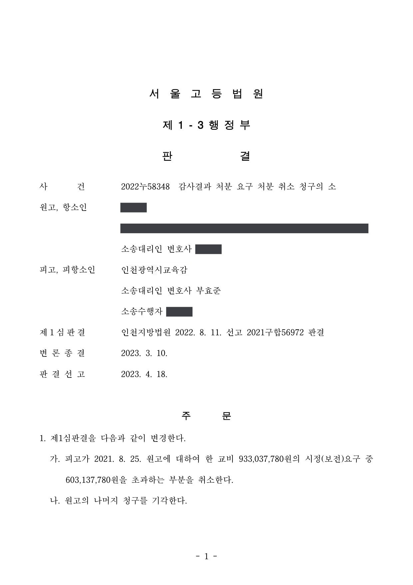
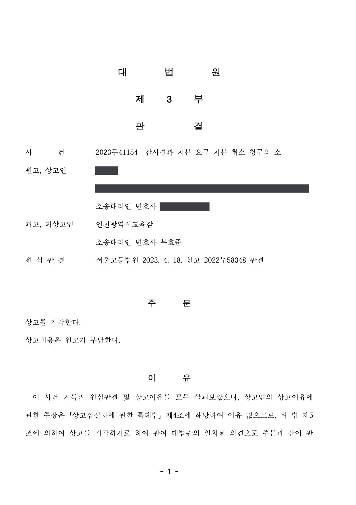

사립유치원 감사결과 처분요구(중징계 요구·교비 보전요구) 취소소송 (1·2·3심)
인천지방법원 2021구합56972 · 서울고등법원 2022누58348 · 대법원 2023두41154 · 담당변호사 부효준
판결문



사건의 요지
사립유치원 교비의 부정사용에 대한 감사 결과 내려진 중징계 요구와 교비 시정(보전)요구에 관하여, 처분성과 보전을 요구할 수 있는 금액의 범위가 다투어진 사건입니다. 상고는 심리불속행으로 마무리되었습니다.
사건의 주요 내용
사립유치원의 원장으로 2017년 3월 임용되어 2020년 9월부터는 설립·경영자 지위까지 겸하게 된 원고는, 전 설립자와 공모하여 유치원 교비 합계 1,115,272,297원을 사적 용도로 사용하였다는 사립학교법 위반(제29조 제6항) 범죄사실로 2021년 2월 벌금형의 약식명령을 받아 확정되었습니다. 관할 교육감(피고)은 감사를 거쳐 2021년 8월, 원고가 개인 자금을 투입하였다고 주장한 금액 중 182,234,510원만 보전된 것으로 인정한 뒤 ① 설립·경영자에게 원장인 원고에 대한 중징계(정직 1월) 의결을 요구하고 ② 부적정하게 사용된 교비 933,037,780원을 시정(보전)하라는 감사결과를 통보하였습니다.
원고는 징계요구와 시정요구의 취소를 구하는 소송을 제기하였습니다. 1심은 시정요구 중 95,900,000원 부분만 취소하였고, 항소심은 취소 범위를 329,900,000원으로 넓혀 1심 판결을 변경하였으며, 원고의 상고는 심리불속행으로 마무리되어 확정되었습니다. 부효준 변호사는 1·2·3심에서 피고인 교육감을 대리하였습니다.
쟁점
- 원장 임용 전에 전 설립자에게 지급할 매매대금에 충당된 교비 사용분을 현재의 원장·경영자에 대한 시정요구와 징계요구의 처분사유로 삼을 수 있는지
- 확정된 약식명령의 범죄사실과 다른 사실을 행정소송에서 인정할 수 있는지
- 원장이 개인 자금을 유치원에 투입하였다는 주장을 어느 범위에서 교비 보전으로 인정하여 시정(보전)요구 금액에서 공제할 것인지
- 관할청이 징계를 요구하면서 징계의 종류와 양(중징계·정직 1월)을 특정하는 것이 위법한지
원고의 주장
- 부정사용액 중 2017년 2월 전 설립자에게 지급할 유치원 매매대금에 충당된 446,132,297원은 원고가 원장으로 임용되기 전의 사안이므로 원고에게 책임을 물을 법적 근거가 없다고 주장하였습니다.
- 교육감이 인정한 182,234,510원 외에도 교직원 휴가비, 2017년 내부 인테리어 공사비, 2020년 교실 확장 공사비, 체험학습 행사비, 교보재 조달비 등 합계 8억 5천만 원을 개인 자금으로 유치원에 투입하였으므로 이를 보전조치 금액으로 추가 인정하여야 한다고 주장하였습니다.
- 교육감에게 징계를 요구할 권한이 있더라도 징계수위를 '중징계(정직 1월)'로 정할 권한은 없고, 각 처분은 사실오인과 이익형량 결여, 신뢰보호원칙·평등원칙(자기구속원칙)·비례원칙 위반으로 재량권을 일탈·남용한 것이라고 주장하였습니다.
부효준 변호사의 주장
- 구 사립학교법 제29조 제6항과 유아교육법 제30조 제1항에 따라 교비가 부정하게 사용된 유치원의 원장 또는 설립·경영자에게 시정을 명할 수 있고, 유아교육법 제30조 제1항은 시정사유의 발생 시기나 귀속 회계연도를 제한하지 않으므로 원장 임용 전의 사용분도 시정요구 대상이 된다고 주장하였습니다.
- 원고가 전 설립자와 공모하여 교비를 부정사용하였다는 범죄사실의 약식명령이 확정된 이상 그 사실인정은 행정소송에서도 유력한 증거가 되며, 원고가 주장하는 개인 자금 투입은 세금계산서·계약서 등 증빙의 신빙성이 부족하거나 유치원을 위하여 지출되었다는 증거가 없다고 다투었습니다.
- 부정사용 뒤 같은 금액이 교비로 보전되었더라도 부정사용이 없었던 것이 되지는 않으므로 징계요구의 처분사유에는 영향이 없고, 관할청이 징계를 요구할 때 징계의 종류와 양을 특정하는 것은 사립학교법 시행령 제24조에 근거한 것으로 위법하지 않다고 주장하였습니다.
법원의 판단
1심과 항소심은 모두, 유아교육법 제30조 제1항에 따라 교육감은 교비가 부정사용된 유치원의 원장 또는 설립·경영자에게 시정을 명할 수 있으므로 시정요구에 법률상 근거가 있고, 원고가 전 설립자와 유치원 매매대금 중 446,132,297원을 교비로 충당하기로 합의한 사실과 확정된 약식명령에 비추어 원장 임용 전의 사용분도 처분사유로 삼을 수 있다고 판단하였습니다.
개인 자금 투입 주장에 관하여 1심은 2017년 인테리어 공사비 69,900,000원과 2020년 공사 계약금 26,000,000원만 인정하여 시정요구 중 837,137,780원을 초과하는 부분을 취소하였습니다. 항소심은 2020년 교실 확장 공사비 260,000,000원 전부가 설립자 변경인가 과정에서 교육감의 시설 보완요구에 따라 실제 지출된 공사대금이라고 보아 합계 329,900,000원을 보전된 것으로 인정하고, 603,137,780원을 초과하는 시정요구 부분을 취소하도록 1심 판결을 변경하였습니다.
항소심은 교비가 사후에 보전되었더라도 부정사용이 없었던 것이 되지는 않으므로 중징계 의결요구는 적법하고, 관할청이 징계를 요구하면서 징계의 종류와 양을 특정한 것도 위법하지 않으며 재량권 일탈·남용도 없다고 판단하였습니다. 대법원은 2023년 8월 심리불속행으로 상고심을 마무리하여, 징계요구와 603,137,780원의 시정요구가 그대로 확정되었습니다.
살피건대, 행정소송의 수소법원이 관련 형사재판의 사실 인정에 구속되는 것은 아니지만, 이미 확정된 관련 형사재판에서 인정한 사실은 당해 행정소송에서도 유력한 증거자료가 되므로, 해당 행정소송에서 제출된 다른 증거들에 비추어 관련 형사재판의 사실 판단을 채용하기 어렵다고 인정되는 특별한 사정이 없는 한, 이와 반대되는 사실은 인정할 수 없고(대법원 2016. 12. 29. 선고 2016두40016 판결 등 참조), 이는 약식명령이 확정된 경우에도 마찬가지인바(대법원 2021. 10. 14. 선고 2021다243430 판결 등 참조), 원고가 전 설립자와 공모하여 위 446,132,297원을 포함한 이 사건 유치원 교비 합계 1,115,272,297원을 부정사용 하였다는 내용의 범죄사실로 약식명령이 확정된 사실은 앞서 본 바와 같고, 그 사실 판단을 채용하기 어렵다고 인정할 만한 특별한 사정은 찾아볼 수 없으므로(오히려, 위 446,132,297원이 원고가 대금지급의무를 지체하던 중 사용된 것이 아니라 매매계약 체결 당일 사용되었다는 점을 고려하면, 원고와 전 설립자 사이에 그에 관한 합의가 있었다고 봄이 합리적이다), 원고의 위 주장은 이유 없다.
서울고등법원 2022누58348 판결 이유 '2. 나. 2017. 2. 9.자 전출금액 446,132,297원에 관하여'
한편 유치원 교비의 부정사용이 있은 후, 같은 금액의 돈이 교비로 보전되었다고 하더라도 부정사용이 없었던 것으로 되지 않으므로(사립유치원 교비회계의 예금계좌에서 다른 계좌로 이체한 돈을 사후에 유치원 운영비용으로 사용하였다고 하더라도 교비회계에 속하는 수입의 전출·유용이 아니라고 볼 수 없다는 대법원 2021. 1. 28. 선고 2019두55392 판결 등 참조), 원고가 이 사건 유치원의 공사를 위해 사비를 지출하였다는 점은 이 사건 징계요구의 처분사유 존부에 영향을 미치지 아니한다.
서울고등법원 2022누58348 판결 이유 '2. 다. 원고 사비 지출에 관하여 — 6) 소결론'
살피건대, ① 관할청이 사립학교 교원의 임용권자에게 징계를 요구할 때는 구 사립학교법 시행령 제24조 제2호에 따라 징계의 종류를 기재한 서류를 첨부하여야 하는 점, ② 사립학교 교원의 임용권자가 징계의결을 요구할 때 구 사립학교법 시행령 제25조에 따라 징계의 종류와 양을 기재한 서류 및 징계요구자의 의견서 등을 첨부하여야 하는 점, ③ 징계의결 시 징계요구자가 기재한 징계의 종류와 양이나 징계요구자의 의견서는 '징계요구의 내용'으로서 고려사항에 불과하고 교원징계위원회가 징계요구의 내용에 구속되는 것은 아닌 점 등을 고려하면, 사립학교의 관할청이 징계요구권자인 교원의 임용권자에게 징계(징계의결 요구)를 요구할 때, 징계의 종류와 양을 특정하는 것이 위법이라고 할 수 없다. 원고의 주장은 이유 없다.
서울고등법원 2022누58348 판결 이유 '2. 라. 징계수위 기재의 위법 여부 — 2) 판단'
※ 판결 이유 가운데 이 사건의 판단 기준이 된 부분을 그대로 옮긴 것으로, 당사자 이름 등은 가렸습니다.
이 사건이 보여 주는 것
사립유치원 교비 부정사용에 대한 감사 처분요구 사건에서는, 형사절차에서 약식명령이 확정되면 그 범죄사실이 행정소송에서도 유력한 증거가 되어 부정사용 자체를 다투기는 매우 어렵습니다. 다툼의 실익은 '보전요구 금액'에 집중되는데, 개인 자금을 유치원에 투입하였다는 주장은 세금계산서·공사계약서·송금내역과 그 지출 경위(이 사건에서는 설립자 변경인가를 위한 교육감의 시설 보완요구)가 서로 맞아야 인정됩니다.
한편 교비를 사후에 보전하였더라도 부정사용이 없었던 것이 되지는 않아 징계요구의 처분사유에는 영향이 없고, 관할청이 징계요구 단계에서 징계의 종류와 양을 특정하는 것도 적법하다고 판단된 점은, 비슷한 감사 처분요구를 받은 사립학교 관계자가 알아 둘 부분입니다.
관련 법령구 사립학교법 제29조 제6항, 제54조 제3항, 제61조, 제62조, 제64조 · 구 사립학교법 시행령 제24조, 제25조, 제25조의2 · 사립학교 교원 징계규칙 제2조, 구 교육공무원 징계양정 등에 관한 규칙 별표 · 유아교육법 제8조 제4항, 제19조의8 제1항, 제30조 제1항 · 행정소송법 제8조 제2항, 민사소송법 제420조 · 상고심절차에 관한 특례법 제4조, 제5조
관련 단어사립유치원 교비 부정사용감사결과 처분요구시정(보전)요구중징계 요구정직 1월 의결요구유아교육법 제30조사립학교법 제29조 제6항약식명령 확정 사실인정교비 보전징계수위 특정일부 취소심리불속행 확정교육감 대리
비슷한 처분을 받으셨다면
행정처분은 처분이 있음을 안 날부터 90일 이내에 행정심판이나 취소소송으로 다투어야 하고, 기간이 지나면 돌이킬 수 없는 처분은 집행정지를 서둘러야 합니다. 처분서를 받은 날짜부터 확인해 드립니다.